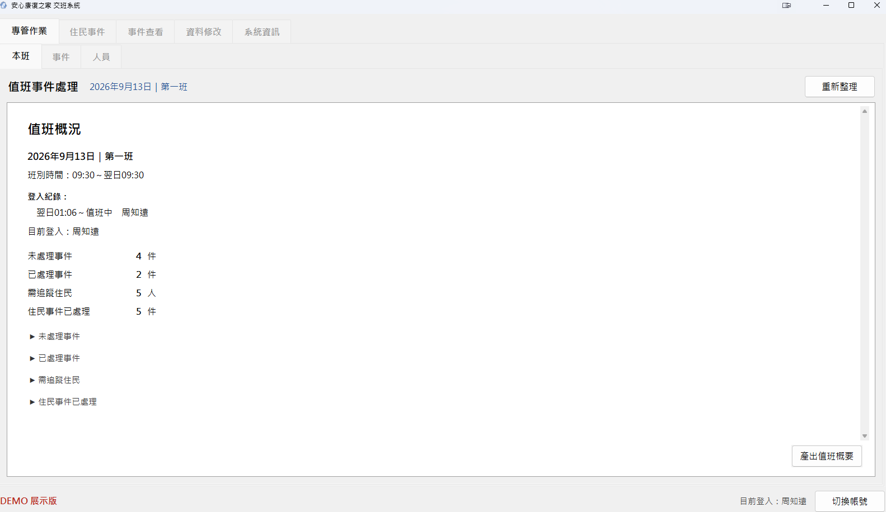
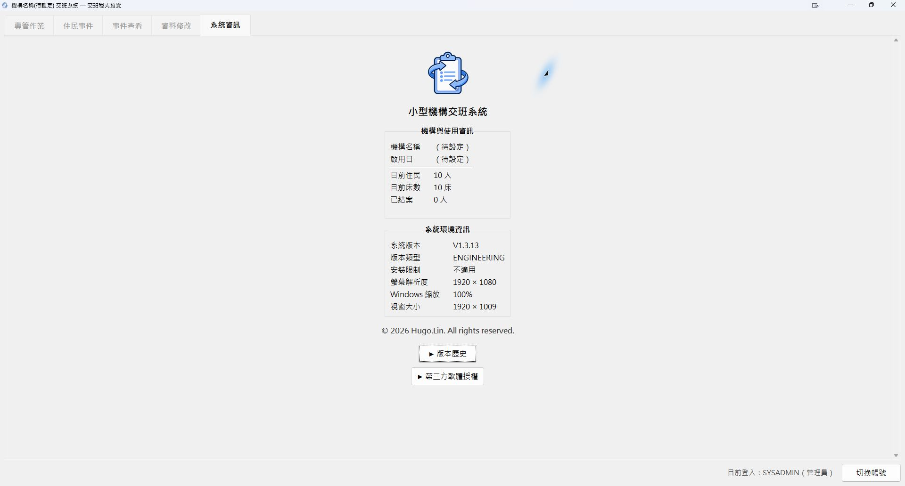

Product 01 · Work / Organisation
Handover &
Incident Tracking
Clearer handovers and connected follow-up for small residential teams.
Keep everyday events and their progress together on your own Windows computer.

Pick up where
the last shift left off
Bring resident records, everyday events and follow-up notes into one Windows workspace. Review outstanding matters when a shift begins, add progress during work, and retrieve records by date, status or keyword.
Aimed at small residential teams working on a single computer. Resident events and general issues, such as equipment or environmental matters, have their own records, with follow-up attached to the original event.
01 / Find the context
Find the event.
See the follow-up.
Filter resident events by year and month, handling status, tracking status, priority or keyword. Read the original details, observations, handling notes and subsequent progress together.
Export search results or an individual event to Excel for internal records and handovers.

02 / Keep work connected
A new shift.
The same context.
Keep equipment and environmental follow-up attached to the same event. A timeline brings together the original entry, subsequent progress and recording staff.
The selected event below is still outstanding and shows its creation and two progress entries. This is not an immutable history of every edit or deletion. Export controls show available entry points, not a finished report or an export test performed for these screenshots.

03 / See the month
A month of events,
for one resident
The resident calendar brings events into a monthly view, with a monthly total and counts by event type. Select a date to review its events, or switch months to look back through earlier records.

04 / Share and keep
Share the handover.
Keep a record.
Generate a shift summary, copy the text to the clipboard and paste it into LINE or a group conversation. An Excel file is saved at the same time for internal records and later reference.
This screen shows the DEMO shift overview. The shift overview and login audit are available in ENGINEERING and DEMO; they are not provided in TRIAL or LICENSED. Sharing uses a manual copy-and-paste workflow.
{kind=link}

Tools for everyday work
- Resident, room and bed records
- Staff accounts and role permissions
- Weekly and monthly handover views
- Resident events and general issues
- Progress and status across shifts
- Filtered search and previous records
- Search and event exports to Excel
- Edition-dependent backup and restore
Actions depend on the edition, role and record status. The demo excludes live-data import and full database backup or restore. Shift overview and login audit are exclusive to ENGINEERING and DEMO.
Local-first.
Ready for offline work.
Core recording, search and licence verification are designed to work offline. The working database stays on the organisation’s computer, reducing the need to transfer routine records to a cloud service.
Organisations still need to manage computer access, backups and exported files. Copying, exporting or using a synchronised folder can move data elsewhere.
Working environment
Minimum Windows version, CPU, RAM, storage, the full hardware and DPI matrix, standard-user operation and spreadsheet compatibility remain to be confirmed.
Bed and data limits are unverified; 20–30 beds was a requirements example, not a tested capacity. Concurrent network use, cross-device synchronisation and a mobile app are unconfirmed.
Demo & release status
Traditional Chinese demo
A workflow demo with fictional data exists, subject to daily limits and edition restrictions. DEMO and the 30-day trial are separate modes.
Public eligibility, package and link pendingCommercial product
Core features are implemented with local test records. Final real-device, installation and manual acceptance checks remain outstanding.
Downloads not yet openFormal code signing and release conditions remain to be confirmed. Engineering screenshots do not demonstrate an approved RELEASE installation or completed demo or commercial release acceptance.
Still to be confirmed
- Official English name, commercial publisher and brand attribution.
- Perpetual or time-limited licensing, a one-off purchase model, price, maintenance fees, updates and support.
- Public demo eligibility, package version, final real-device acceptance and formal code signing.
- Supported environments, minimum requirements, bed and data limits.
The English heading is descriptive; this page does not imply an English-language interface. No substantiated customer adoption, measured outcomes, certification or regulatory compliance claims were supplied.
Future directions
An engineering configuration foundation exists. Further industry templates and extensions have not been delivered; these are not availability or launch commitments.
View the preview edition and product information
The system information retains ENGINEERING and unset organisation and activation fields. The 10 residents and 10 beds are fictional display statistics, not capacity limits or customer numbers.
{kind=link}

Let's talk
Good tools begin with a conversation.
A question about a product, or a workflow you would like to improve?